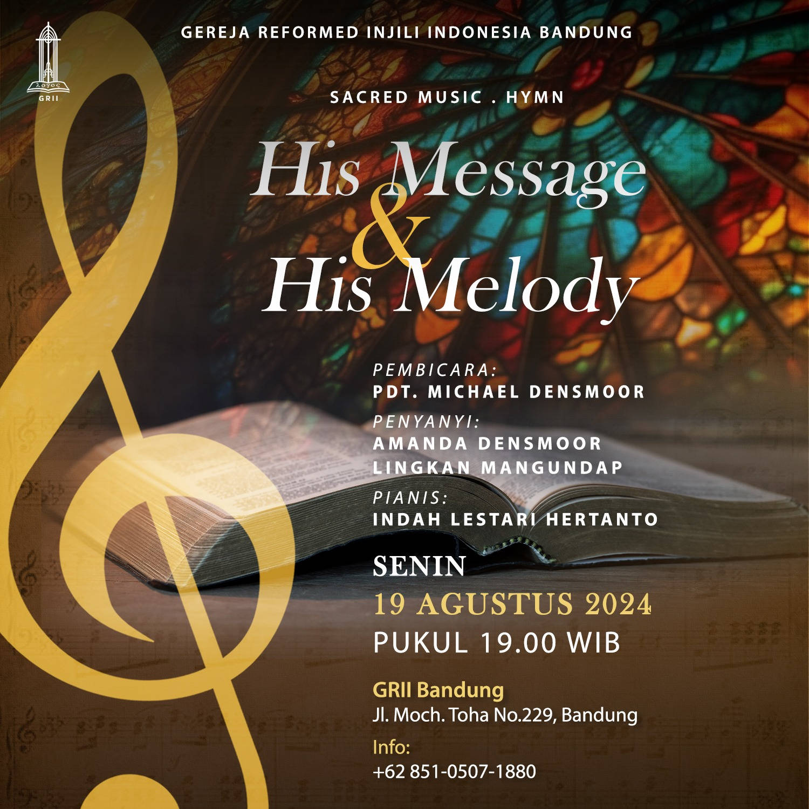

Sacred Hymn: His Message & His Melody
Kami mengundang Anda untuk turut serta dalam acara inspiratif yang memadukan kajian mendalam
tentang musik hymn dan Firman Tuhan. Temukan makna dan keindahan di balik lirik hymn yang penuh
pesan spiritual, sambil memperkaya iman melalui pengajaran Firman Tuhan.
Pembicara:
Pdt. Michael Densmor
Penyanyi:
Amanda Densmoor
Lingkan Mangundap
Pianis:
Indah Lestari Hertanto
Waktu & Tempat:
⌚ Senin, 19 Agustus 2024. Pk. 19.00
📌 Aula Stefanus - GRII Bandung
Jl. Moh. Toha 229, Bandung.
Acara ini gratis, terbuka untuk umum. Mari hadiri, ajak teman/saudara/kenalan untuk hadir bersama.
PENDAFTARANProfil: Pdt. Michael Densmoor
Pdt. Michael Densmoor meninggalkan karir sebagai insinyur komputer di Motorola, AS dan datang ke Indonesia
sebagai seorang misionaris pada tahun 1990. Bersama dengan beberapa pemimpin Kristen lainnya, beliau mendirikan
pelayanan kepada suku-suku Indonesia yang terabaikan.
Saat ini sudah lebih dari 140 orang Indonesia yang melayani sebagai perintis jemaat di 33 suku terabaikan.
Pada tahun 2005, Pdt. Michael ditahbiskan sebagai pendeta di Gereja Reformed Injili Indonesia (GRII) dan di tahun 2009
beliau merintis dan menjadi gembala di kebaktian Inggris di GRII Kemayoran.
Beliau juga mengajar missiology di STT Reformed Indonesia Warung Buncit, Jakarta. Belakangan ini beliau lulus
summa cum laude dari Georgetown University dengan gelar M.A. di bidang Modern Islamic Studies.
Pdt. Michael dan istrinya, Maria Wahjuni, dikarunia dua anak,
Nicole (1997) dan Amanda (1998).
Amanda Densmoor
sebagai penyanyi sopran keturunan Indonesia-Amerika telah menghibur penonton di seluruh Amerika Serikat dan Asia Tenggara.
Pada musim 2022/2023, Amanda bergabung dengan Annapolis Opera sebagai salah satu pengiring pengantin dalam Le nozze di Figaro,
tampil dalam Franz Lehár Operetta Gala karya Bel Cantanti Opera, dan dalam paduan suara Faust karya Opera Baltimore.
Di musim 2023/2024, Amanda kembali ke Annapolis Opera untuk menyanyikan Papagena dalam Die Zauberflöte,
bergabung dengan Manassas Ballet Theatre dan Voce Chamber Singers sebagai solois sopran dalam Carmina Burana,
dan menampilkan resital musik kamar untuk seruling, vokal, dan piano bersama Matinee.M.
Bersama Maryland Opera Studio, Amanda memerankan tokoh Queen of the Night (Die Zauberflöte) dan Valentina Scarcella (Later the Same Evening), dan membawakan lagu Dalinda (Ariodante) dan Barbarina (Le nozze di Figaro). Tokoh lainnya termasuk Servilia (La clemenza di Tito), Nella (Gianni Schicchi), Suor Genovieffa (Suor Angelica), Patience (Patience), Counsel (Trial by Jury), Second Woman (Dido and Aeneas), dan Kate (The Pirates of Penzance). Sebagai solois konser, Amanda telah menyanyikan solo dalam Jephte karya Carissimi, Missa karya Haydn dalam Angustiis, Requiem karya Fauré, dan Requiem karya Mozart. Amanda sangat menyukai musik baru, dan telah memainkan peran sebagai Ibu dalam Four Freedoms karya Joseph C. Phillip Jr., dan Meera dalam This Is Not That Dawn karya Omar Najmi. Sama-sama betah sebagai penyanyi paduan suara, Amanda telah menyanyikan banyak karya paduan suara besar dengan National Symphony Orchestra dan Baltimore Symphony Orchestra. Amanda juga bernyanyi sebagai penyanyi sopran dengan Washington National Cathedral, Basilica of the National Shrine of the Immaculate Conception, The Thirteen, dan Lux Choir. Sorotan repertoar paduan suaranya meliputi Requiem karya Mozart, Requiem karya Brahms, The Planets karya Holst, Stabat Mater karya Rossini, Dante Symphony karya Liszt, Chichester Psalms and Kaddish karya Bernstein, Path of Miracles karya Talbot, dan pemutaran perdana dunia Across the Line of Dreams karya Roxanna Panufnik.
Amanda memperoleh gelar Master of Music dari Maryland Opera Studio, dan memperoleh gelar Bachelor of Music dalam bidang Vocal Performance, summa cum laude, dari University of Maryland. (sumber)
Media & Undangan
Mari bekerja bersama berbagian dalam membawa jiwa datang mendengar berita Injil.
Undangan WhatsApp
Profile Picture
Gambar (Portrait)
Gambar (Landscape)
Lokasi
Jl. Moh Toha 229
Kota Bandung, Jawa Barat 40255
Kontak kami untuk keperluan informasi, pertanyaan dan koordinasi keberangkatan bersama.
Hubungi KamiPENDAFTARAN